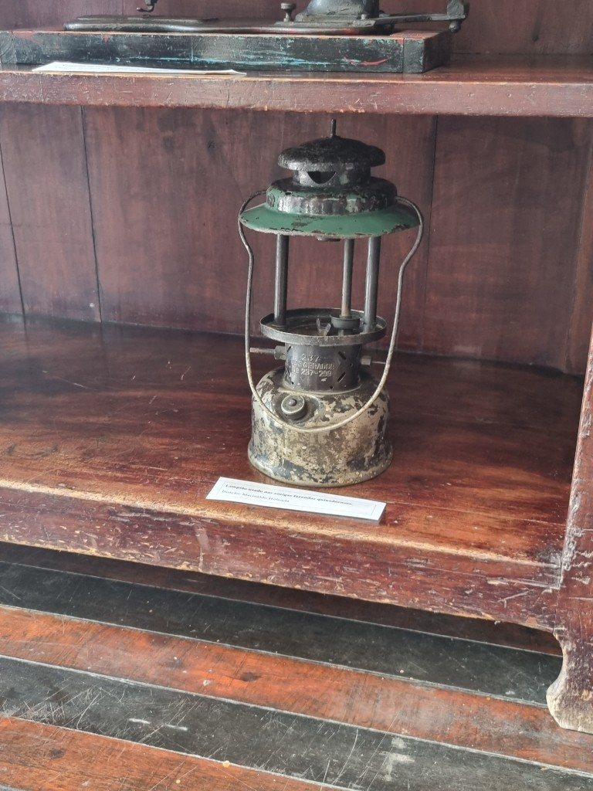
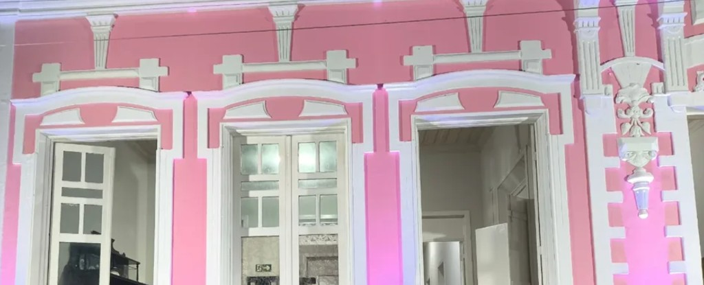

Acervo digital
O lampião e suas sombras
Museu Jacinto de Sousa, Quixadá
No Museu Jacinto de Sousa, em Quixadá, os objetos guardam mais do que história. Guardam memória viva, causos passados de geração em geração e, dizem alguns, presenças que nunca foram embora.
O lampião que você vê aqui é um desses objetos. Por anos iluminou casas do sertão cearense, projetando luz onde havia escuridão. Mas quem trabalha no museu sabe: quando o dia fecha e o silêncio toma conta das salas, as sombras que ele deixa nas paredes parecem se mover sozinhas.
Funcionários e visitantes relatam presenças inexplicadas, sons sem origem e formas que surgem e desaparecem. Ninguém sabe ao certo o que são. Mas todos concordam que estão lá.
Veja por você mesmo
Este projeto usa Realidade Aumentada para dar forma a essas histórias. Aponte a câmera do seu celular para o marcador e descubra o que as sombras escondem.
Galeria


Marcador AR
Imprima ou exiba este padrão para acionar a experiência de realidade aumentada:
/models/lampiao.glbPattern AR:
/markers/lampiao.patt